Accreditamento Comandante
Il portale delle Smart Guide è uno spazio digitale che raccoglie risorse pratiche e aggiornate in un unico ambiente intuitivo. Strumenti chiari e organizzati per organizzarti e trovare subito ciò che ti serve.
01.
Accreditamento Comandante
Una panoramica sul flusso di accreditamento per l'utente "Comandante".
Accreditamento Comandante
Passaggi per accreditarsi a sistema
Per accreditarsi a sistema, il Comandante dovrà procedere seguendo i passaggi sottostanti.
I tuoi dati
Consente di inserire i dati: anagrafici, di residenza e di contatto.
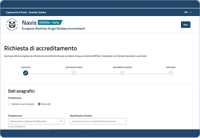
Dettaglio utente
Consente di aggiungere un nuovo profilo, indicando la tipologia: di account, utente e profilo.
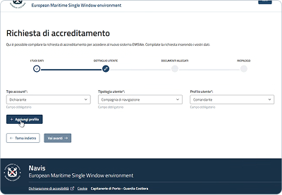
Documenti allegati (opzionale)
Consente di allegare varie tipologie di documenti.
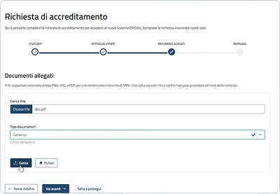
Riepilogo
Consente di visualizzare il riepilogo delle informazioni inserite negli step precedenti e procedere con la sottomissione dell'accreditamento.
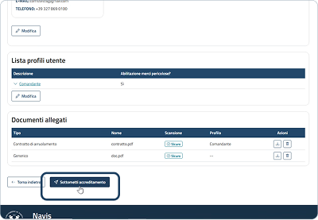
I TUOI DATI
- I tuoi dati
- Dettaglio utente
- Documenti allegati
- Riepilogo
Dati anagrafici "Extra UE"
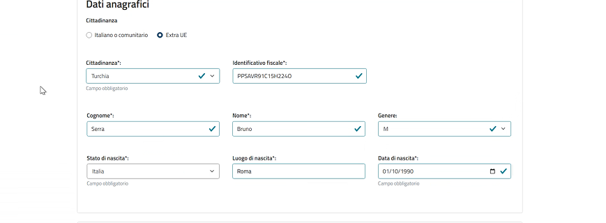
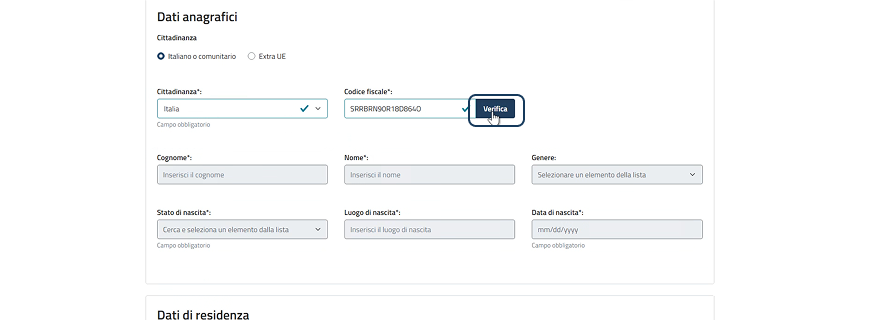
Dati anagrafici "Italiano o comunitario"
Inserimento dati anagrafici
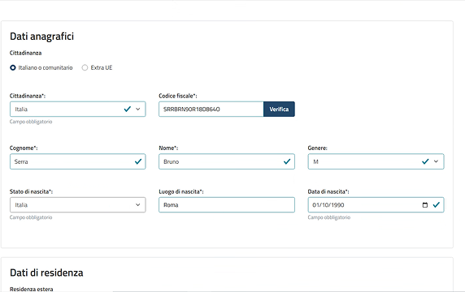
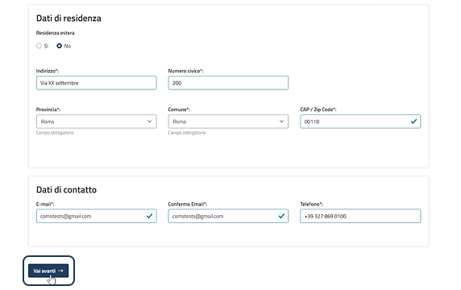
Inserimento dati di residenza e di contatto
Documento di riconoscimento per utente Extra UE
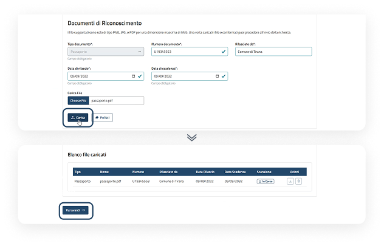
Effettuando l'accesso tramite SPID, CIE, CNS ed eIDAS, i dati anagrafici vengono recuperati automaticamente in relazione alle impostazioni dei protocolli di identità digitale. In caso contrario l'utente deve inserire i dati manualmente.
DETTAGLIO UTENTE
- I tuoi dati
- Dettaglio utente
- Documenti allegati
- Riepilogo
Selezione tipologia account, utente e profilo
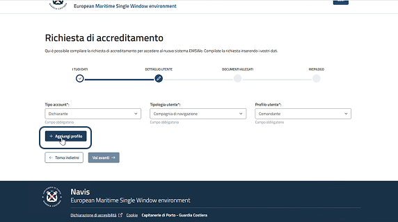
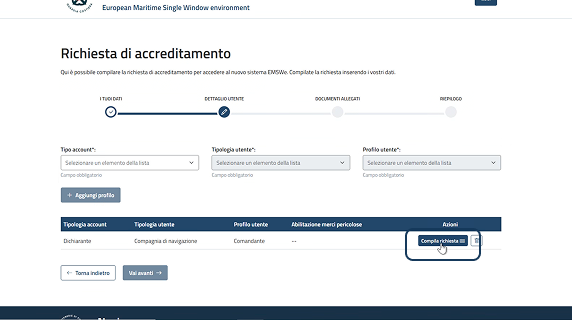
Compila richiesta
Aggiunta informazioni profilo selezionato
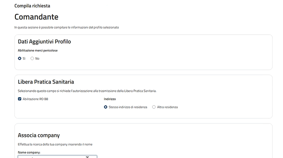
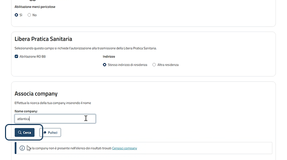
Ricerca company
Selezione e associazione company
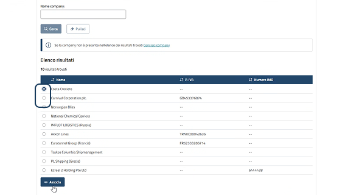
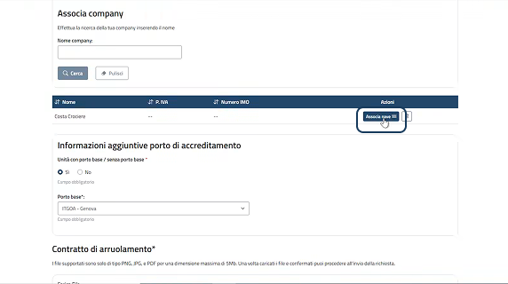
Associazione nave
Selezione navi della company
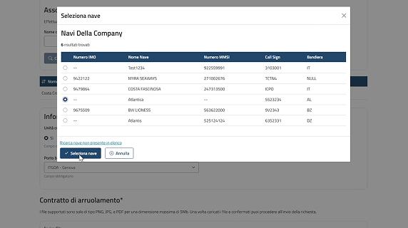
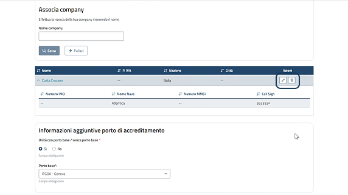
Navi associate e azioni disponibili
Informazioni aggiuntive e contratto di arruolamento
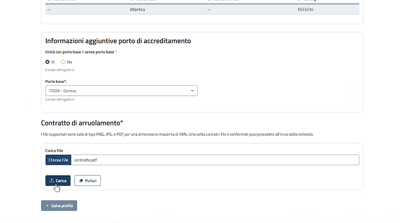
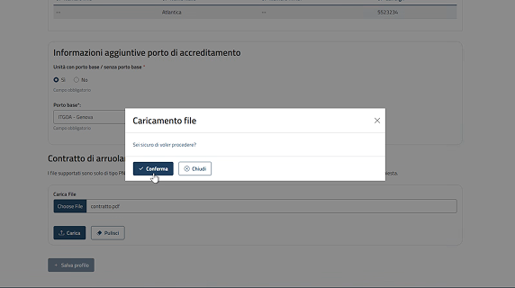
Finestra di conferma caricamento contratto
Azioni disponibili su file caricati e salvataggio profilo
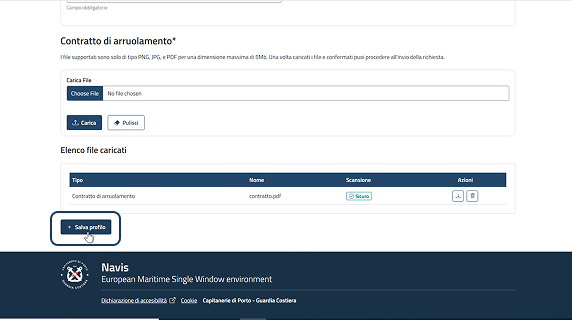
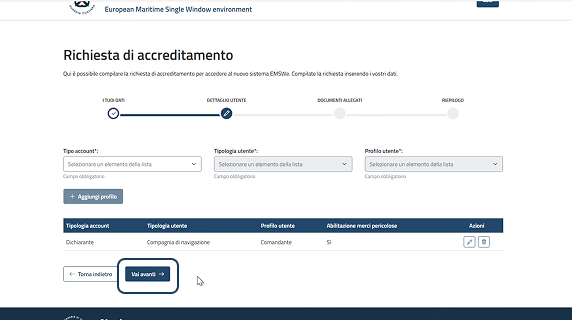
Richiesta compilata e step successivo
Se la company non è presente nell'elenco dei risultati trovati, cliccare "Censisci company" all'interno della sezione di associazione.
Se la nave non è presente nell'elenco dei risultati trovati, cliccare "Ricerca nave non presente in elenco" all'interno della finestra di associazione.
È possibile aggiungere ulteriori profili replicando le operazioni sopra descritte.
DOCUMENTI ALLEGATI (OPZIONALE)
- I tuoi dati
- Dettaglio utente
- Documenti allegati
- Riepilogo
Allegare documenti successivamente
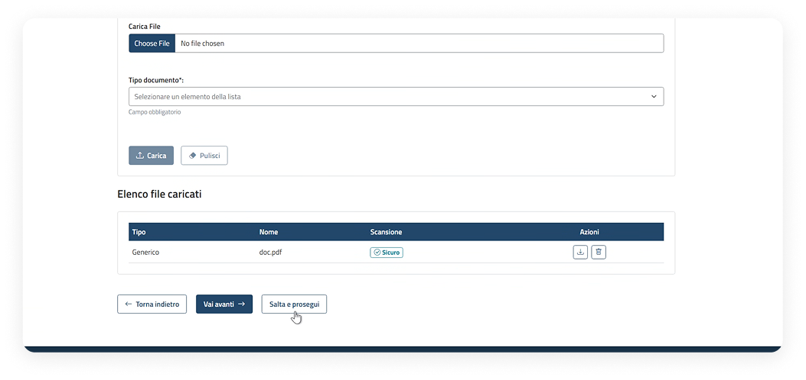
RIEPILOGO
- I tuoi dati
- Dettaglio utente
- Documenti allegati
- Riepilogo
Informazioni e possibili azioni
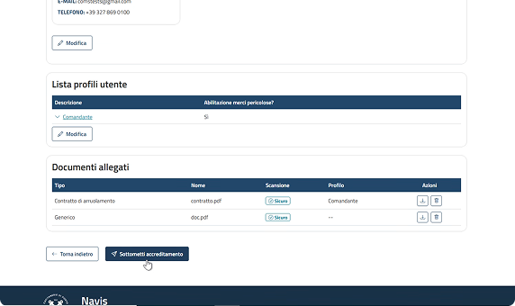

Finestra di conferma (Italiano/Comunitario e Extra UE)
Richiesta inoltrata
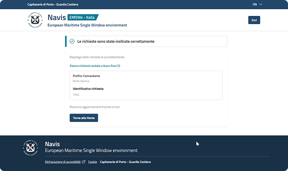
CENSIMENTO NUOVA COMPANY — COMPANY NON PRESENTE IN ELENCO
- I tuoi dati
- Dettaglio utente
- Documenti allegati
- Riepilogo
Censimento company non presente
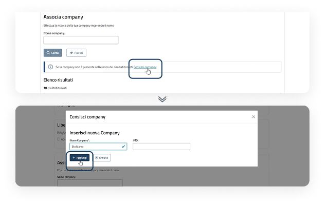
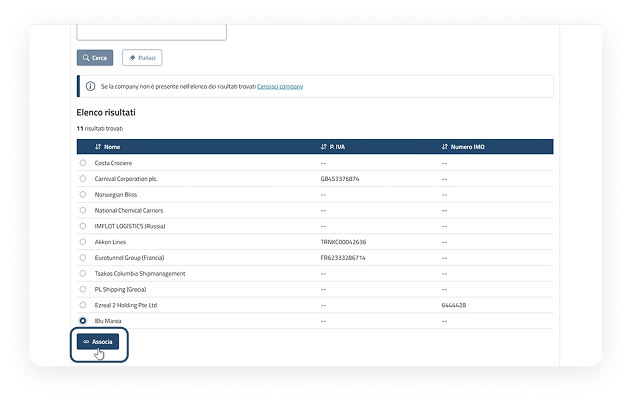
Selezione e associazione
Company associata
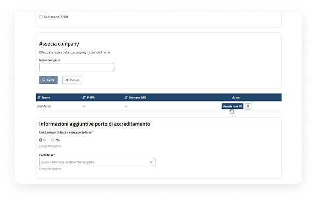
02.
Modifica utenza
Una panoramica sul flusso di modifica dell'utenza personale.
Punto di accesso
Profilo personale
Dalla dashboard è possibile accedere alle funzionalità dell'utenza personale tramite:
Menu a tendina
Cliccando sull'icona del profilo personale viene visualizzato un menu a tendina, da cui è possibile accedere a "La mia utenza".

Modifica utenza
Passaggi per modificare l'utenza personale
Dopo aver effettuato l'accesso nell'area "La mia utenza", l'utente può modificare i dati inseriti precedentemente tramite i seguenti passaggi:
Visualizzazione informazioni e modifica
All'interno della pagina di dettaglio della propria utenza, selezionare il pulsante "Modifica" presente nella sezione contenente i dati che si desiderano modificare.

Informazioni e possibili azioni
Proseguire apportando le modifiche necessarie. Successivamente cliccare il pulsante "Vai avanti".

Sottometti accreditamento e finestra di conferma
Nello step di riepilogo cliccare "Sottometti accreditamento". Il sistema mostrerà una finestra per confermare l'accreditamento. Cliccare "Conferma" per confermare le modifiche.

Modifica utenza
Approfondimenti sulla modifica dell'utenza
L'utente può effettuare variazioni secondo i seguenti due scenari:
Modifiche che non richiedono approvazione da parte di Capitanerie
- dati anagrafici;
- dati di residenza;
- dati di contatto e password;
- documento di riconoscimento, se presente;
- disattivazione di uno o più profili già associati all'utente;
- dettaglio utente: sarà possibile eliminare una o più associazioni con aziende/agenzie/company/enti e porti;
- comandi di appartenenza, grado e matricola (solo per utenti interni di Capitanerie);
- modifiche all'elenco collaboratori, solo per il profilo utente "Agente raccomandatario marittimo";
- eliminazione di uno o più collaboratori dall'elenco;
- eliminazione dell'associazione del collaboratore con una o più agenzie;
- eliminazione dell'associazione a uno o più porti per agenzia;
- aggiunta di uno o più collaboratori già accreditati a sistema.
Modifiche che richiedono approvazione da parte di Capitanerie
- profilo utente;
- aggiunta di uno o più profili;
- aggiunta di una o più associazioni con aziende/agenzie/company/enti e porti;
- modifiche all'elenco collaboratori, solo per il profilo utente "Agente raccomandatario marittimo";
- aggiunta di uno o più collaboratori non accreditati a sistema.

03.
Disabilitazione utenza
Una panoramica sul flusso di disabilitazione dell'utenza personale.
Punto di accesso
Profilo personale
Dalla dashboard è possibile accedere alle funzionalità dell'utenza personale tramite:
Menu a tendina
Cliccando sull'icona del profilo personale viene visualizzato un menu a tendina, da cui è possibile accedere a "La mia utenza".
Disabilitazione utenza
Passaggi per disabilitare l'utenza personale
Dopo aver effettuato l'accesso nell'area "La mia utenza", l'utente può disabilitare l'utenza personale tramite i seguenti passaggi:
Una volta disabilitata l'utenza non sarà più possibile accedere a sistema.
Attivazione della "Modifica" dall'elenco risultati delle operazioni
All'interno della pagina di dettaglio della propria utenza, selezionare il pulsante "Richiedi disabilitazione utenza".

Azione di modifica
Il sistema mostra una finestra in cui inserire obbligatoriamente la motivazione della disabilitazione dell'utenza personale; procedere cliccando il pulsante "Disabilita utenza".

Dopo aver cliccato il pulsante di disabilitazione utenza, la stessa non viene inviata a valutazione da parte dell'Autorità Marittima ma sarà disattivata istantaneamente.
04.
Integrazione richiesta di accreditamento
Una panoramica sul flusso di integrazione della richiesta di accreditamento.
Integrazione richiesta di accreditamento
E-mail di integrazione della richiesta
L'utente che ha richiesto l'accreditamento riceverà una e-mail di richiesta di integrazione da parte dell'Autorità Marittima.
Link per integrare la richiesta di accreditamento
L'utente che ha richiesto l'accreditamento verrà informato tramite e-mail che, a seguito delle verifiche effettuate dall'Autorità Marittima, sono necessarie alcune integrazioni ai dati e/o ai documenti inviati.
Per procedere con l'istruttoria, dovrà compilare l'integrazione cliccando il link "Clicca qui" presente nella e-mail.

Integrazione richiesta di accreditamento
Passaggi per integrare la richiesta
L'utente che ha richiesto l'accreditamento potrà integrare la richiesta tramite i seguenti passaggi. Al termine la richiesta assumerà lo stato "Integrata".
Integra richiesta accreditamento
Per integrare la richiesta di accreditamento, in fondo alla pagina di dettaglio cliccare il pulsante "Integra".

Integrazione informazioni
Inserire le informazioni mancanti richieste, come l'aggiunta del documento di riconoscimento. Indicare la tipologia, il tipo documento, il numero, da chi è stato rilasciato, la data di rilascio e di scadenza. Successivamente scegliere il file del documento tramite il pulsante "Scegli file" e caricarlo cliccando "Carica".

Documento caricato e pulsante di integrazione
Il documento viene mostrato nell'elenco file caricati. Il file può essere scaricato o eliminato tramite gli appositi pulsanti e, dopo che la scansione ha dato esito "Sicuro", cliccare il pulsante "Integra".

Finestra di conferma
Il sistema mostra una finestra per confermare l'invio dell'integrazione richiesta; proseguire cliccando "Conferma".

Finestra di successo
Il sistema mostra una finestra per comunicare che le integrazioni sono state correttamente acquisite; proseguire cliccando "Home".

Dettaglio e cambio stato
Dopo aver integrato la richiesta di accreditamento, all'interno del dettaglio quest'ultima assume lo stato "Integrata".